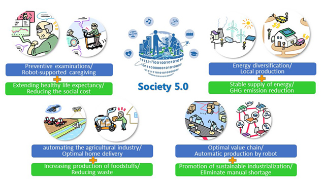
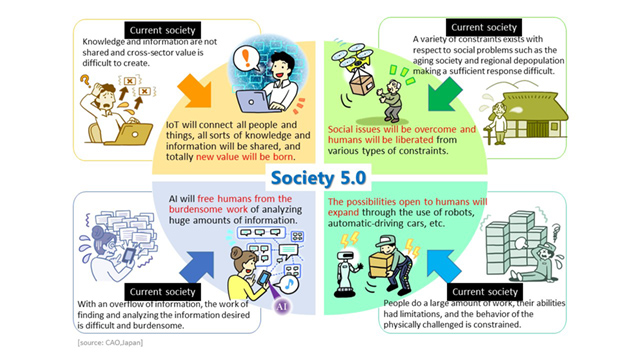

Society 5.0 Balances Economic Development and Solves Social Issues
As the economy grows, life is becoming prosperous and convenient, the demand for energy and foodstuffs is increasing, lifespan is becoming longer, and the aging society is advancing. In addition, the globalization of the economy is progressing, international competition is becoming increasingly severe, and problems such as the concentration of wealth and regional inequality are growing. Social problems that must be solved in opposition (as a tradeoff) to such economic development have become increasingly complex. Here, a variety of measures have become necessary such as the reduction of greenhouse gas (GHG) emissions, increased production and reduced loss of foodstuffs, mitigation of costs associated with the aging society, support of sustainable industrialization, redistribution of wealth, and correction of regional inequality, but achieving both economic development and solutions to social problems at the same time has proven to be difficult in the present social system.

Economic Development and Solutions to Social Problems in Society 5.0
In Society 5.0, new value created through innovation will eliminate regional, age, gender, and language gaps and enable the provision of products and services finely tailored to diverse individual needs and latent needs. In this way, it will be possible to achieve a society that can both promote economic development and find solutions to social problems.Achieving such a society, however, will not be without its difficulties, and Japan intends to face them head-on with the aim of being the first in the world as a country facing challenging issues to present a model future society.
